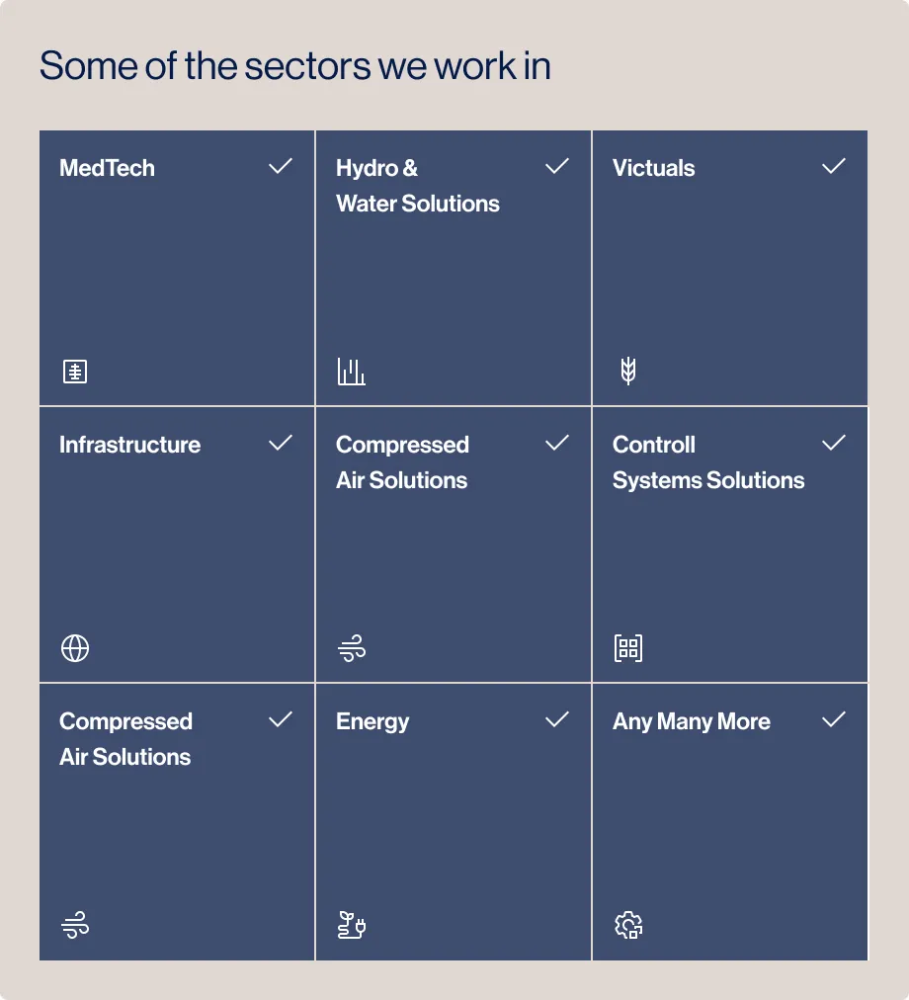
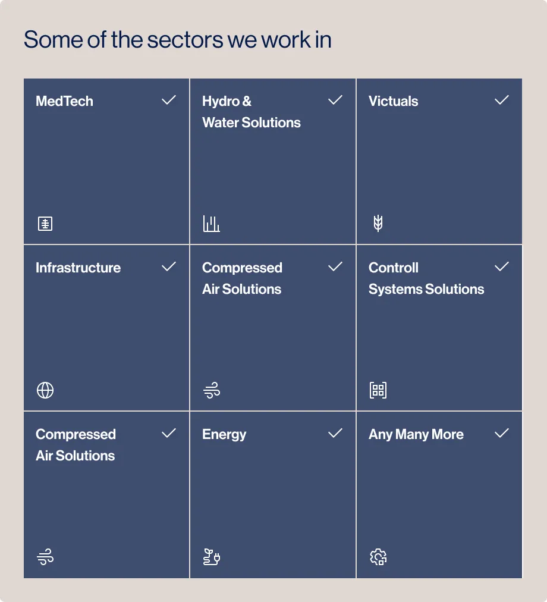

Ledande inom skärande bearbetning
Mekanisk verkstad för legotillverkning oavsett industri
Tillsammans med våra partners skapar vi effektiva lösningar. Med vår höga kompetens inom svarvning och fräsning löser vi era utmaningar i enlighet med ställda önskemål och krav. MAB Production är en mekanisk verkstad för legotillverkning, med lång erfarenhet oavsett material.
Varför MAB Production?
CNC-bearbetning
Trumling
Lasermärkning
Gnistbearbetning
Montering
Polering
Läppning
Vår mekaniska verkstad har en avancerad maskinpark anpassad för alla typer av utmaningar.
DN solutions DVF 5000
Work area
625x450x400
Spindle speed
12000
Tool locations
61
Control system
Fanuc
Type
5-axis milling
Haas VF-4SS
Work area
2xØ160x300
Spindle speed
12000
Tool locations
24
Control system
Haas
Type
5-axis milling
Fanuc Robodrill
Work area
Ø160x200
Spindle speed
9000
Tool locations
21
Control system
Fanuc
Type
4-axis milling
Nakamura Tome Sc-300
Work area
Ø360x600
Spindle speed
6000
Tool locations
15
Control system
Fanuc
Type
Y-axis turning
Takisawa TY 2000 YSG
Work area
Ø210x50000
Spindle speed
6000
Tool locations
15
Control system
Fanuc
Type
Y-axis turning
Doosan PUMA 2600 Y
Work area
Ø375x760
Spindle speed
6000
Tool locations
12/24
Control system
Fanuc
Type
Y-axis turning
Legotillverkare inom CNC-bearbetning oavsett industri
Det som gör oss unika är vårt övergripande ansvar för våra kunder. Om du inte hittar en lösning på vår hemsida betyder det inte att vi inte kan lösa det åt dig. MAB Production är din partner genom hela processen, vi ser till att fixa det som behövs. Vårt motto är: vår kunds utmaning är vår utmaning. Med 40 års erfarenhet av skärande bearbetning vet vi vad som krävs!
 
Detaljerad bearbetning med precision för innovativa industrier
Genom att kombinera vårt detaljorienterade hantverk med morgondagens innovationer producerar vi resultat som förändrar människors liv.
Vi är erfarna
Över 40 års erfarenhet av CNC-tillverkning
Vi är trygga
Vi tar hand om hela processen enligt era önskemål
Vi är mer än en leverantör
Vi finns här för att lösa era utmaningar
Samarbete
Tillsammans med våra partners skapar vi effektiva lösningar. Med vår höga kompetens inom svarvning och fräsning löser vi era utmaningar i enlighet med ställda önskemål och krav. MAB Production är en mekanisk verkstad för legotillverkning, med lång erfarenhet oavsett material.
Micromatic
Micromatic är en entreprenör som tillverkar komplexa produkter med höga precisionskrav. Vi har en avancerad maskinpark med banbrytande 5-axliga maskiner som leder marknaden inom bearbetningskapacitet.
Naverviken
Naverviken är ett expanderande högteknologiskt företag med fokus på montering av komplexa konstruktioner och tillverkning av komponenter, främst i rostfritt stål och aluminium.
Bli en del av MAB Production
Som ledande aktör i branschen är vi stolta över vårt engagemang för spetskompetens och avancerad teknik. Vi letar efter passionerade och skickliga individer som delar vår vision för att tänja gränserna för vad som är möjligt.

Ta kontakt
Oavsett om du har specifika frågor om våra produkter, vill diskutera ett potentiellt samarbete eller helt enkelt behöver mer information, är vårt team på MAB Production här för att hjälpa dig.
Kontakt
Fyll i formuläret så kommer en medlem av vårt team att kontakta dig.